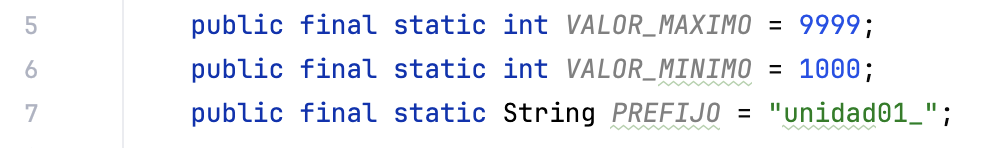
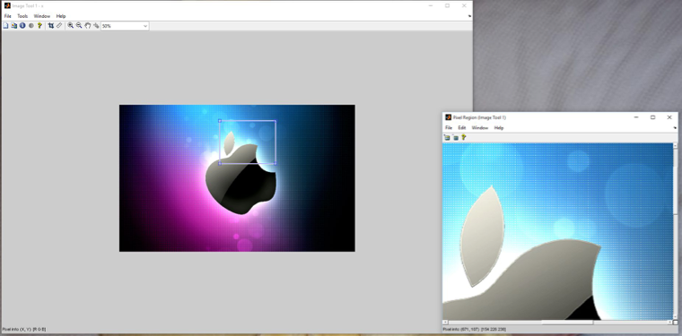

Unidad 1 - Introducción a la programación. Lenguaje Java.
| Fecha | Versión | Descripción |
|---|---|---|
| 10/09/2021 | 1.0.0 | Versión inicial. |
| 17/09/2021 | 1.0.1 | Corrección en la declaración de variables. |
| 20/09/2021 | 1.0.2 | Corrección del índice. |
| 01/09/2025 | 1.0.3 | Revisión del tema. |
| 08/09/2025 | 1.0.4 | Adaptación del tema. |
1 Programa
1.1 Programador y Usuario
- Un/a programador/a es aquella persona que se encarga de codificar programas, es decir, de escribir las instrucciones que un ordenador debe seguir.
- Usuario/a es el término que se utiliza para referirse a la persona que utiliza una aplicación informática con la intención de conseguir un resultado final.
1.2 Algoritmo vs Programa vs Aplicación Informática
- Un algoritmo es un método de resolución de un problema en un número finito de pasos. Es como una receta de cocina: una secuencia clara y ordenada de acciones para llegar a un resultado. Ejemplo: ¿cómo hacer una tortilla francesa?
- Un programa es la expresión de un algoritmo en un lenguaje comprensible para el ordenador. Es la "traducción" de nuestra receta a un idioma que la máquina pueda ejecutar.
- Una aplicación informática es un conjunto de programas enlazados de manera conveniente para realizar una tarea más compleja.
1.2.1 El paso intermedio: Pseudocódigo
Antes de saltar directamente a escribir en un lenguaje de programación como Java, los programadores usamos una herramienta intermedia fundamental: el pseudocódigo.
El pseudocódigo es una forma de describir un algoritmo utilizando una mezcla de lenguaje natural y algunas convenciones de los lenguajes de programación. Su gran ventaja es que nos permite centrarnos en la lógica del problema sin preocuparnos por la sintaxis estricta (puntos y comas, llaves, etc.).
Ejemplo: Algoritmo para sumar dos números en pseudocódigo
Dominar el pseudocódigo es clave para aprender a "pensar como un programador".
1.3 Programa vs procesador
- Llamamos procesador toda entidad capaz de ejecutar un algoritmo. En última instancia será la CPU del ordenador, móvil o TV.
- Un programa constará de:
- Instrucciones: una instrucción es una combinación de palabras, datos y símbolos que, obedeciendo la sintaxis propia del lenguaje, son utilizados por el ordenador para llevar a cabo una acción determinada.
- Datos: llamamos dato toda información que utiliza el ordenador.
- Un programa recibe datos de entrada, los procesa siguiendo las instrucciones y produce unos datos de salida.

1.3.1 ¿Cómo es un programa? Un primer vistazo
Aunque todavía no conozcamos los detalles, es bueno tener una primera imagen de cómo es un programa real. Este es el programa más famoso para empezar a programar, el "Hola Mundo", escrito en Java:
Este pequeño bloque de código es un programa completo que le ordena al ordenador escribir el mensaje "¡Hola Mundo!" en la pantalla. ¡Así de simple y potente es la programación!
1.3.2 Paradigmas de Programación
Los programas deben ser fiables, legibles, eficientes y modulares. Para conseguirlo, a lo largo de la historia han surgido diferentes formas o "estilos" de programar, conocidos como paradigmas:
- Programación estructurada: Usar únicamente secuencias, instrucciones condicionales e instrucciones repetitivas. Es la base de todo.
- Programación modular: El programa se diseña por partes (módulos o funciones), como si fueran piezas de un puzle.
- Programación orientada a objetos (POO): El paradigma que usaremos en este módulo. Se basa en "objetos" que agrupan datos (atributos) y comportamientos (métodos). Lo veremos en profundidad.
- Otros: - Programación concurrente: Útil cuando tenemos que realizar varias acciones a la vez. Se ve en segundo curso. - Programación funcional, Programación lógica...
1.4 Ciclo de vida del software
El ciclo de vida del software (el proceso de creación y explotación de un programa) se puede comparar con la construcción de una casa: no se empieza poniendo ladrillos al azar, sino que se sigue un proceso ordenado.

Este modelo, conocido como "modelo en cascada", describe las fases de forma secuencial:
- Análisis: Entender qué necesita el cliente (los "planos" iniciales de la casa).
- Diseño: Detallar cómo se va a construir el programa (diseño técnico, como la estructura y la fontanería). Aquí es donde creamos nuestro algoritmo.
- Codificación: Escribir el código en un lenguaje de programación (¡poner los ladrillos!).
- Pruebas: Comprobar que todo funciona como se esperaba (revisar que no haya grietas ni goteras).
- Mantenimiento: Corregir errores y añadir nuevas funcionalidades una vez el programa está en uso (reformas y reparaciones).
Es un modelo ideal. En la realidad, es común tener que volver a una fase anterior (iterar) si se descubre un problema.
1.5 Intérprete vs Compilador
- Para que el ordenador entienda nuestro código fuente (escrito en un lenguaje de alto nivel como Java), necesita ser traducido a código máquina (0s y 1s). Hay dos tipos de traductores:
Intérprete:
- Traduce y ejecuta el código línea a línea.
- No genera un fichero ejecutable independiente.
- Más lento, pero más fácil para depurar.
- Ejemplos: Python, PHP.

Compilador:
- Traduce todo el código fuente de golpe a un fichero de código objeto o ejecutable.
- El programa resultante es más rápido.
- Si hay un error, hay que volver a compilar todo el programa.
- Ejemplos: C, C++.

1.6 Java: 50% Compilado - 50% Interpretado
El lenguaje Java es especial, ya que combina ambos mundos:
- Fase de Compilación: El compilador de Java (
javac) traduce nuestro código fuente (.java) a un lenguaje intermedio llamado bytecodes (.class). Este código no es directamente ejecutable por el procesador. - Fase de Interpretación: La Máquina Virtual de Java (JVM), que actúa como un intérprete, coge los bytecodes y los traduce a código máquina específico del sistema donde se está ejecutando.

Esta arquitectura es la que le da a Java su famosa característica "Write Once, Run Anywhere" (Escribe una vez, ejecuta en cualquier parte), ya que el mismo fichero .class puede ser ejecutado en Windows, Linux, Mac, etc., siempre que tengan una JVM instalada.

1.7 Corrección de programas
Un programa sin errores es una utopía. Para encontrarlos y corregirlos, usamos dos técnicas:
- Testing (Pruebas): Se crea un juego de pruebas, un conjunto de casos de uso (con entradas y salidas esperadas) para verificar que el programa se comporta correctamente en todas las situaciones posibles.
- Debugging (Depuración): Se utiliza una herramienta llamada depurador (debugger) que permite ejecutar el programa paso a paso, inspeccionar el valor de los datos en cada momento y encontrar el punto exacto donde se produce un error.
Tipos de errores comunes:
- Errores de sintaxis: No seguir las reglas gramaticales del lenguaje. El compilador los detecta.
- Errores de ejecución: Ocurren cuando el programa está en marcha (ej: dividir por cero).
- Errores lógicos: El programa funciona pero hace algo incorrecto. Son los más difíciles de encontrar.
1.8 ¿Qué lenguaje elegir?
Existen cientos de lenguajes de programación. Puedes ver un ranking de popularidad aquí.
Este año estudiaremos Java, pero aquí tienes una comparativa con otros lenguajes populares:
C: Lenguaje de bajo/medio nivel. Muy rápido y potente, permite un control directo del hardware. Es el lenguaje base de la mayoría de sistemas operativos.
Java: Lenguaje de alto nivel, multiplataforma y orientado a objetos. Extremadamente popular para el desarrollo de aplicaciones empresariales (backend), aplicaciones Android y en el mundo del Big Data.
Python: Lenguaje de alto nivel, muy fácil de aprender por su sintaxis clara y legible. Es el rey en ciencia de datos, inteligencia artificial y scripting.
2 La Información
2.1 ¿Qué es la información?
Un programa manipula datos. Los datos son la representación de la información. Para un ordenador, toda la información (números, texto, imágenes, etc.) se reduce a secuencias de 0s y 1s (bits).
Nosotros, como programadores, trabajamos con un nivel de abstracción mayor, utilizando lenguajes de programación para manejar estos datos de forma más sencilla.
2.2 Datos
Un dato es cualquier información con la que trabaja un algoritmo. Cada dato es de un tipo determinado (entero, real, carácter...). Los datos aparecen en un programa como variables o constantes.
2.2.1 Variables
Analogía: Piensa en una variable como una caja etiquetada. La etiqueta es el nombre de la variable, lo que hay dentro es su valor, y el tipo de caja (para zapatos, para joyas...) determina el tipo de dato que puedes guardar.
Una variable es un espacio en la memoria del ordenador (RAM) donde podemos guardar un dato que puede cambiar durante la ejecución del programa.
Cada variable se caracteriza por tener:
- Un nombre (ej:
edad) y un tipo (ej: entero). - Un valor (ej:
17) que se le asigna y puede cambiar.

Las variables se almacenan en la memoria RAM, de forma que:
- El nombre (edad) representa la dirección de la RAM donde está el valor
- El tipo (entero) especifica la cantidad de bytes necesarios para guardar un valor (4).
- El valor es el contenido (17).
2.2.2 Precisión de las variables
El tipo de dato determina cuánta memoria (cuántos bytes) ocupa una variable. Por ejemplo, con 1 byte podemos almacenar 28=256 valores diferentes.
- Si solo guardamos números positivos, el rango sería de 0 a 255.
- Si queremos guardar también negativos, se utiliza un sistema (complemento a dos) que divide el rango, quedando de -128 a 127.
Elegir el tipo de dato adecuado es importante para no desperdiciar memoria y para asegurarnos de que podemos almacenar los valores que necesitamos.
2.2.3 Constantes
Una constante es como una variable, pero su valor no puede cambiar una vez que se ha establecido. Se usan para valores fijos y conocidos, como el número PI.

Es necesario resaltar que:
- Por convenio, los nombres de las constantes se escriben en mayúsculas (
PI,IVA_GENERAL) y se escriben al principio del programa. - Las constantes de carácter (una sola letra) van entre comillas simples (
'A'). - Las cadenas de texto van entre comillas dobles (
"Hola").
2.3 Nombres
Las variables y constantes necesitan un nombre (identificador) para poder usarlas. Las reglas generales son:
- Pueden contener letras, números y el símbolo
_. - Deben empezar por una letra o
_. - No pueden contener espacios en blanco.
- No pueden ser palabras reservadas del lenguaje (
while,class,int...). - Como decíamos, las constantes se escriben en mayúsculas (así cualquier programador las reconoce).
2.4 Tipos de datos
Los tipos de datos se pueden clasificar de muchas formas. Una primera clasificación básica es:

El caso especial del String: En muchos lenguajes como Java, un texto (
String) no es un tipo de dato simple (primitivo). Es un objeto, una estructura más compleja. Sin embargo, el lenguaje nos permite tratarlo de una forma muy similar a los tipos simples, lo que facilita mucho su uso.
2.4.1 Datos simples y compuestos
Una clasificación de los datos (sobre todo de las variables) es saber si estas son simples o compuestas:
-
Simples: Almacenan un único valor (un número, una letra, un estado booleano). Ej:
Edad,NotaMedia. -
Compuestos: Se forman a partir de la agrupación de varios datos simples. Ej:
FechaNacimiento(compuesta por día, mes y año),Direccion.



El píxel de la celda
(772-202)tiene los valores RGB[77, 148, 210].Si hacemos un rápido recuento, una imagen de 600x400, en color real necesitará 600x400x3 = 720.000 bytes ~ 703 KB en memoria
2.4.2 Abstracción de datos
La abstracción es uno de los conceptos más importantes en programación. Consiste en "quedarnos solo con lo que nos interesa".
Un "ente" del mundo real tiene muchísimos datos (una persona tiene nombre, edad, altura, color de ojos, hobbies...). Cuando creamos un programa, solo modelamos los datos que son relevantes para el problema que queremos resolver.
- Para la DGT, de un coche interesa su matrícula, marca, modelo y dueño.
- Para un taller mecánico, interesa además el nivel de aceite, la presión de las ruedas, etc.
Para pensar... Después de ver los tipos de datos, reflexiona:
- ¿Qué tipo de variable usarías para almacenar el número de alumnos en una clase?
- ¿Y para guardar la letra de tu DNI?
- ¿Y para saber si un alumno es repetidor o no?
3 Instrucciones y Operadores
3.1 Expresiones
Las constantes y variables no aparecen aisladas, sino formando parte de expresiones.
Una expresión es una combinación de operandos (variables, constantes, literales) y operadores que, al ser evaluada, produce un resultado.
Los operandos pueden ser de diferentes tipos:
- Constantes:
PI - Variables:
edad - Funciones:
raíz (100),longitud (nombre) - Literales:
100,"IES Camp de Morvedre"
Ejemplos de expresiones:
| Tipos | Expresiones |
|---|---|
| Numéricas | edad |
5 |
|
2*PI*quadrado(radio) |
|
(-b+raiz(quadradp(b)-4*a*c)/(2*a) |
|
| Alfanuméricas | "Pedro" |
"Daenerys" + "De la tormenta" |
|
| Lógicas | True |
False |
|
a<b |
|
(v1<v2) && (v2<v3) |
3.2 Operadores
Son los símbolos que nos permiten realizar operaciones con los datos.
Dependiendo del tipo de datos de los operandos, o del tipo del resultado, tenemos unos tipos de operadores: aritméticos, lógicos, relacionales y alfanuméricos.
3.2.1 Operadores aritméticos
Realizan operaciones matemáticas.
Las variables o constantes que intervienen deben ser numéricas (enteros o reales) y el resultado también.
Los más usuales son:
| Operador | Significado |
|---|---|
^ ó ** |
Potencia |
* |
Producto |
/ó // |
División |
% |
Residuo |
+ |
Suma |
- |
Resta |
¡Cuidado con la división de enteros! En la mayoría de lenguajes de programación, si divides dos números enteros, el resultado será también un entero (se trunca la parte decimal).
Por ejemplo,
5 / 2dará como resultado2, no2.5. Para obtener el resultado real, uno de los números debe ser de tipo real.
Las expresiones que tienen dos o más operandos necesitan unas reglas que permiten determinar en qué orden se evalúan. Si escribimos 2 * 5-3, ¿el resultado es7 o 4?
Para evaluar expresiones complejas, se siguen unas reglas de prioridad (similar a las matemáticas): primero potencias, luego multiplicaciones/divisiones, y por último sumas/restas. Se pueden usar paréntesis () para alterar este orden.
Para ello están las reglas de prioridad, que son estas:
| Operador | Prioridad |
|---|---|
^ |
mas alta |
*, /, % |
|
+,- |
mas baja |
3.2.2 Operadores relacionales
Sirven para comparar dos expresiones. Su resultado es siempre un valor lógico: verdadero o falso.
| Operador | Significado |
|---|---|
> |
mayor |
< |
menor |
== |
igual |
!= |
distinto |
>= |
mayor o igual |
<= |
menor o igual |
Por ejemplo, suponemos las siguientes variables: x = 10, y = 20:
| Expresión | Valor |
|---|---|
(x+y)<20 |
false |
(y-x)<=x |
true |
(x+y)>=x |
true |
x==y |
false |
x!=y |
true |
3.2.3 Operadores lógicos
Actúan sobre operandos lógicos y devuelven un resultado lógico. Los básicos son AND (Y), OR (O) y NOT (NO).
Tablas de verdad:
| x | y | not x | x or y | x and y |
|---|---|---|---|---|
| Falso | Falso | V | F | F |
| Falso | V | V | V | F |
| V | Falso | F | V | F |
| V | V | F | V | V |
Leyes de De Morgan
Son tres leyes básicas que cumplen las expresiones relacionales y que nos pueden servir para expresar de diferentes formas lo que queremos:
Negación de los operadores relacionales
Los operadores relacionales pueden negarse también para obtener expresiones más sencillas o de acuerdo a nuestras necesidades.
La siguiente tabla muestra dichas negaciones:
| OPERADOR | Negación |
|---|---|
| < | >= |
| > | <= |
| == | != |
| != | == |
| <= | > |
| >= | < |
Cambios de prioridad
Como los operadores lógicos y relacionales pueden formar expresiones junto con los aritméticos necesitamos unas reglas de prioridad para saber qué operadores evalúan primero.
| OPERADOR | PRIORIDAD |
|---|---|
| NOT | Alta |
| ^ | |
| *, /, % | |
| +, - | |
| <, >, <=, >= | |
| ==, != | |
| AND | |
| OR | |
| = | Baja |
3.3 Funciones
Son bloques de código reutilizables que realizan una tarea específica.
3.3.1 Funciones predefinidas
Vienen incluidas en el lenguaje de programación para realizar tareas comunes (ej: System.out.println() para escribir en pantalla, Math.sqrt() para calcular una raíz cuadrada).
Las funciones (al igual que en las de las matemáticas) suelen recibir uno o más argumentos y devuelven un valor que llamamos resultado.
Ejemplos de la función de impresión por pantalla en distintos lenguajes:
printf("Hola");System.out.println("Hola");print("Hola")escribe("Hola")Pensemos en la dificultad que supone ahora que empezamos a programar el hecho de pintar algo en pantalla.
Escribir
Hola, a efectos prácticos, es iluminar una serie de píxeles en pantalla en unas determinadas coordenadas en un determinado color, etc .Gracias a funciones como
3.3.2 Funciones definidas por el usuario
Los lenguajes de programación también nos permiten definir nuestras funciones para poderlas utilizar en diferentes partes del programa.
En Java:
En Python:
4 El lenguaje Java
Java es un lenguaje de programación de propósito general, concurrente y orientado a objetos. Su filosofía es WORA (Write Once, Run Anywhere), lo que significa que el código puede escribirse una sola vez y ser ejecutado en cualquier tipo de dispositivo.
Características principales de Java:
- Sencillo: Su sintaxis es relativamente fácil de aprender, inspirada en C++.
- Orientado a Objetos: Posiblemente sea el lenguaje más puramente orientado a objetos. En Java, casi todo es un objeto.
- Distribuido: Excelente para trabajar en red, soportando múltiples protocolos.
- Robusto: El compilador detecta muchos errores que en otros lenguajes solo aparecerían en tiempo de ejecución.
- Seguro: Diseñado con la seguridad en mente, especialmente importante en aplicaciones de red.
- Portable y de Arquitectura Neutral: Gracias a la JVM, el mismo programa compilado (
.class) funciona en cualquier sistema (Windows, Mac, Linux, etc.). - Multithread (Multihilo): Soporta de forma nativa la ejecución de varias tareas simultáneamente.
- Ecosistema enorme: Cuenta con una cantidad gigantesca de librerías y frameworks (como Spring) que lo hacen extremadamente potente para el desarrollo de grandes aplicaciones, especialmente en el entorno empresarial (backend), aplicaciones Android y sistemas de Big Data.
4.1 Primer ejemplo
La aplicación más pequeña posible es la que simplemente imprime un mensaje en la pantalla. Tradicionalmente, cuando empezamos a programar, el mensaje suele ser "¡Hola Mundo!".
Revisa y prueba el siguiente código de ejemplo
Vamos a analizar con más detalle el programa "¡Hola Mundo!":
public class Main: Declara una clase llamadaMain. En Java, todo el código debe estar dentro de una clase. El nombre del fichero fuente debe coincidir,Main.java.public static void main(String[] args): Este es el método principal. Es la puerta de entrada al programa. La JVM siempre buscará este método para comenzar la ejecución.public: Puede ser llamado desde cualquier sitio.static: Pertenece a la clase, no a un objeto. No necesitamos crear nada para llamarlo.void: No devuelve ningún valor.String[] args: Es un array que podría recibir argumentos desde la línea de comandos.System.out.println("¡Hola Mundo!");: Esta es la instrucción que hace el trabajo. Llama al métodoprintlndel objetooutque está en la claseSystempara imprimir el texto en pantalla.
El resultado sería el siguiente:
PRECAUCIÓN: Todas las instrucciones (creación de variables, llamadas a métodos, asignaciones) se deben finalizar con un punto y coma (;).
4.2 Elementos básicos
4.2.1 Comentarios
Son notas que dejamos en el código para explicarlo. El compilador las ignora.
4.2.2 Identificadores
Los identificadores nombran variables, funciones, clases y objetos. Cualquier cosa que el programador necesite identificar o usar.
Reglas y convenios:
- Distinguen mayúsculas de minúsculas (
edadyEdadson diferentes). - Empiezan por letra o
_. - No pueden ser palabras reservadas (
public,class,int...). - Convenio CamelCase:
- Nombres de clases empiezan con mayúscula:
CalculadoraFacturas. - Nombres de variables y métodos empiezan con minúscula:
nombreUsuario,calcularTotal(). - Nombres de constantes van en mayúsculas y con
_:IVA_GENERAL.
Por ejemplo, serían identificadores válidos:
- contador
- suma
- edad
- sueldoBruto
- sueldoNeto
- nombre_usuario
- nombre_Completo
- letraDni
Y su uso sería:
4.3 Tipos de datos
En Java existen dos tipos principales de datos:
-
Tipos de datos simples: Nos permiten crear variables que almacenan un solo valor.
-
Tipos de datos compuestos: Estructuras de datos más complejas que permiten almacenar muchos datos (vectores, objetos, etc.).
Tipos de datos simples soportados por Java:
- Números enteros: byte, short, int, long
- Números reales: float, double
- Carácteres: char
- Valores lógicos: boolean
En Java existen 8 tipos de datos simples o primitivos:
| Tipo | Descripción | Memoria | Rango de valores permitidos |
|---|---|---|---|
| byte | Número entero con signo | 1 byte | -128 a 127 |
| short | Número entero corto con signo | 2 bytes | -32.768 a 32.767 |
| int | Número entero con signo | 4 bytes | -2.147.483.648 a 2.147.483.647 |
| long | Número entero largo con signo | 8 bytes | Muy grande |
| float | Número real de precisión simple | 4 bytes (32 bits) | ±3,410^-38 a ±3,410^38 |
| double | Número real de precisión doble | 8 bytes (64 bits) | ±1,710^-308 a ±1,710^308 |
| char | Un solo carácter (Unicode) | 2 bytes | Representa un carácter |
| boolean | Valor lógico | 1 bit | true o false |
Java no comprueba los desbordamientos de rango. Si a una variable
bytecon valor 127 le sumas 1, pasará a valer -128 (comportamiento cíclico).
Existe un tipo de dato compuesto llamado String que conviene conocer ya que permite representar texto. Más adelante veremos cómo se utiliza.
4.4 Declaración de variables
La sintaxis para declarar una variable es:
tipo identificador [ = valor][,identificador [= valor] ...];
Los literales numéricos con decimales en Java son de tipo
doublepor defecto. Para asignar un valor a una variablefloat, debemos añadir unafal final del número (7.0f). Si no lo hacemos, el compilador dará un error de "posible pérdida de precisión".
Otros ejemplos a la hora de definir valores:
Como se verá más adelante cada tipo de dato primitivo tiene una clase correspondiente (Boolean, Character, Byte, Short, Integer, Long, Float y Double), llamadas wrappers, que definen también constantes y métodos útiles.
Es obligatorio indicar el tipo y el identificador.
Si una variable no ha sido inicializada Java le asigna un valor por defecto.
Este valor es:
- Para las variables de tipo numérico, el valor por defecto es cero ( 0 ).
- Las variables de tipo char, el valor ''\u0000''.
- Las variables de tipo boolean, el valor false.
- Para las variables de tipo referencial (objetos), el valor null.
Es una buena práctica inicializar siempre todas las variables.
Palabras clave
Palabras que no podemos utilizar salvo en las instrucciones del lenguaje.
| abstract | continue | for | new | switch |
|---|---|---|---|---|
| boolean | default | goto | null | synchronized |
| break | do | if | package | this |
| byte | double | implements | private | threadsafe |
| byvalue | else | import | protected | throw |
| case | extends | instanceof | public | transient |
| catch | false | int | return | true |
| char | final | interface | short | try |
| class | finally | long | static | void |
| const | float | native | super | while |
Palabras reservadas
Además, el lenguaje se reserva unas cuantas palabras más, pero que hasta ahora no tienen un cometido específico.
| cast | uture | generic | inner |
|---|---|---|---|
| operator | outer | rest | var |
4.4.1 Ámbito de una variable
El ámbito de una variable es la parte del programa donde esa variable existe y puede ser utilizada.
En Java, a grandes rasgos, podemos distinguir:
- Variables de instancia y de clase (
static): Pertenecen a un objeto o a una clase. Su ámbito es todo el objeto/clase. Las veremos en profundidad en Programación Orientada a Objetos. - Variables locales: Se declaran dentro de un método o un bloque de código (
{...}). Su ámbito se limita exclusivamente a ese método o bloque. Una vez que la ejecución sale de ahí, la variable "muere" y su memoria se libera.
Por ahora, nos centraremos exclusivamente en las variables locales. Es una buena práctica declarar las variables en el ámbito más reducido posible.
4.4.2 Variables locales
Una variable local se declara dentro del cuerpo de un método de una clase y es visible únicamente dentro de dicho método.
Es una buena costumbre declararlas justo al principio.
También pueden declararse variables dentro de un bloque con llaves { }. En ese caso, sólo serán visibles dentro de dicho bloque.
Un ejemplo (no es necesario entenderlo) :
En este ejemplo existe una variable local: int i; únicamente puede utilizarse dentro del bloque main donde fue creada.
4.4.3 Constantes (final)
Para declarar una constante, usamos la palabra reservada final. Su valor no podrá ser modificado.
4.5 Operadores
Los operadores son una parte indispensable de la programación ya que nos permiten realizar cálculos matemáticos y lógicos, entre otras cosas.
Los operadores pueden ser:
-
Aritméticos: sumas, restas, etc.
-
Relacionales: menor, menor o igual, mayor, mayor o igual, etc.
-
Lógicos: and, or, not, etc.
-
Bits: prácticamente no los utilizaremos en este curso.
-
Asignación: =
4.5.1 Aritméticos
| Operador | Formato | Descripción |
|---|---|---|
| + | op1 + op2 |
Suma |
| - | op1 - op2 |
Resta |
| * | op1 * op2 |
Multiplicación |
| / | op1 / op2 |
División (entera si ambos son enteros) |
| % | op1 % op2 |
Resto de la división (módulo) |
| ++ | op1++ ó ++op1 |
Incremento en 1 (op1 = op1 + 1) |
| -- | op1-- ó --op1 |
Decremento en 1 (op1 = op1 - 1) |
Pre-incremento vs. Post-incremento:
- Post-incremento (
op1++): Primero se usa el valor actual deop1en la expresión y después se incrementa. - Pre-incremento (
++op1): Primero se incrementaop1y después se usa el nuevo valor en la expresión.
Para pensar... Si
int x = 5;, ¿qué valor tendráyen cada caso?
int y = x++;int y = ++x;
4.5.2 Relacionales
| Operador | Formato | Descripción |
|---|---|---|
| > | op1 > op2 |
Mayor que |
| < | op1 < op2 |
Menor que |
| >= | op1 >= op2 |
Mayor o igual que |
| <= | op1 <= op2 |
Menor o igual que |
| == | op1 == op2 |
Igual que |
| != | op1 !=op2 |
Distinto que |
Los operadores relacionales actúan sobre valores enteros, reales y caracteres. Devuelven un valor del tipo boolean (true, false).
Ejemplo:
Resultado de ejecución:

4.5.3 Lógicos
| Operador | Formato | Descripción |
|---|---|---|
| && | op1 && op2 |
Y (AND) lógico. true si ambos son true. |
| || | op1 || op2 |
O (OR) lógico. true si alguno es true. |
| ! | ! op1 |
Negación lógica (NOT). Devuelve true si es false op1. |
Estos operadores actúan sobre operadores o expresiones lógicas, es decir, aquellos que se evalúan a cierto o falso (true, false).
Resultado de ejecución:
4.5.4 Asignación
El operador básico es =, pero se puede combinar con los aritméticos para abreviar:
| Operador | Equivalencia |
|---|---|
+= |
a = a + b |
-= |
a = a - b |
*= |
a = a * b |
/= |
a = a / b |
Es posible combinar el operador de asignación con otros operadores para, de forma abreviada, realizar un cálculo y asignarlo a una variable:
| Operador | Formato | Descripción |
|---|---|---|
| += | op1 += op2 | op1 = op1 + op2 |
| -= | op1 -= op2 | op1 = op1 - op2 |
| *= | op1 *= op2 | op1 = op1 * op2 |
| /= | op1 /= op2 | op1 = op1 / op2 |
| %= | op1 %= op2 | op1 = op1 % op2 |
| &= | op1 &= op2 | op1 = op1 & op2 |
| |= | op1 |= ope2 | op1 = op1 | ope2 |
| ^= | op1 ^= op2 | op1 = op1 ^ op2 |
| >>= | op1 >>= op2 | op1 = op1 >> op2 |
| <<= | op1 <<= op2 | op1 = op1 << op2 |
| >>>= | op1 >>>= op2 | op1 = op1 >>> op2 |
4.5.5 Expresiones
Una expresión es la combinación de varios operadores y operandos. Por ejemplo, tenemos las siguientes expresiones:
El lenguaje Java evalúa las expresiones aplicando los operadores uno a uno siguiendo un orden específico.
4.5.6 Precedencia de operadores
Indica el orden en que se evalúan. Aquí un resumen de los más comunes (de mayor a menor prioridad):
- Operadores postfijos: [ ] . (paréntesis)
- Operadores unarios: ++expr, --expr, -expr, ~ !
- Creación o conversión de tipo: new (tipo)expr
- Multiplicación y división: *, /, %
- Suma y resta: +, -
- Desplazamiento de bits: <<, >>, >>>
- Relacionales: <, >, <=, >=
- Igualdad y desigualdad: ==, !=
- AND a nivel de bits: &
- AND lógico: &&
- XOR a nivel de bits: ^
- OR a nivel de bits: |
- OR lógico: ||
- Operador condicional: ? :
- Asignación: =, +=, -=, *=, /=, %=, ^=, &=, |=, >>=, <<=
4.6 Conversión de tipos
4.6.1 Casting
La conversión entre tipos primitivos se realiza mediante el casting.
Java proporciona dos tipos de casting: implícito y explícito. El implícito se realiza automáticamente mientras que el explícito la tenemos que escribir nosotros.
Casting implícito
El compilador realiza automáticamente el casting implícito cuando el tipo al que se ha de convertir un dato es más amplio que el tipo original.
Es decir, Java hará el casting implícito automáticamente cuando convertimos:
-
de char a int o de char a float
-
de int a float

Por ejemplo:
Si tratamos de hacer un casting implícito al revés, el compilador nos dará un error:
El casting con los tipos boolean y String no se puede realizar.
Casting explicito
Hemos visto que el casting implícito no se puede realizar cuando queremos convertir a un tipo más estrecho (por ejemplo, convertir de float a int, ya que se pierden los decimales).
Pero a veces necesitamos hacerlo, sabiendo que vamos a perder precisión. En este caso tenemos que explicitar el casting.
Para realizar un casting explícito, se debe escribir el tipo al que se quiere convertir entre paréntesis, justo antes del valor que se quiere convertir.
(tipo) valor
Los siguientes ejemplos ilustran el uso del casting explícito:
4.6.2 Conversión textual
Además de las conversiones con casting, Java incorpora una serie de métodos para hacer otras conversiones.
Concatenación
Se puede convertir cualquier valor en un String sólo concatenando con un String vacío "".
String.valueOf()
De forma equivalente a la concatenación, se puede utilizar el método String.valueOf () para convertir a String.
charAt()
Lógicamente, no podemos convertir un String en un char, ya que el String puede tener varios caracteres. Pero podemos usar el método charAt() para obtener un caracter que esté en una determinada posición.
Hay que tener en cuenta que las posiciones empiezan por 0.
Character.getNumericValue()
En el punto anterior hemos visto que si hacemos el casting implícito para convertir un char en un int, obtenemos el valor Unicode del carácter.
Si queremos obtener el valor que representa el caracter se puede hacer con el método Character.getNumericValue ().
parseInt() y parseFloat()
Para obtener el valor numérico representado por un String podemos utilizar parseInt () o parseFloat ().
4.7 La clase Math
Se echan de menos operadores matemáticos más potentes en Java. Por ello se ha incluido una clase especial llamada Math dentro del paquete java.lang.
Esta clase posee muchos métodos muy interesantes para realizar cálculos matemáticos complejos como cálculo de potencias, raíces cuadradas, valores absolutos, seno, coseno, etc.
Por ejemplo:
También posee constantes como:
Algunos ejemplos de otros métodos:
4. 8 Literales
A la hora de tratar con valores de los tipos de datos simples se utiliza lo que se denomina literales. Son los valores fijos que escribimos directamente en el código.
- Lógicos:
true,false. - Enteros:
10(decimal),012(octal, empieza por 0),0xA(hexadecimal, empieza por 0x). Paralong, se añade unaLal final:1234567890L. - Reales:
12.34. Por defecto sondouble. Parafloat, se añadef:12.34f. - Carácter: Entre comillas simples:
'a'. Usan secuencias de escape para caracteres especiales:'\n'(nueva línea),'\t'(tabulador). - Cadenas: Entre comillas dobles:
"Hola mundo".
4.8.1 Literales lógicos
Son únicamente dos, las palabras reservadas true y false.
4.8.2 Literales enteros
Los literales de tipo entero: byte, short, int y long pueden expresarse en decimal (base 10), octal (base 8) o hexadecimal (base 16).
Además, puede añadirse al final del mismo la letra L para indicar que el entero es considerado como long (64bits).
En Java, el compilador identifica un entero decimal (base 10) al encontrar un número cuyo primer dígito es cualquier símbolo decimal excepto el cero (del 1 al 9). A continuación pueden aparecer dígitos del 0 al 9.
La letra L al final de un literal de tipo entero puede aplicarse a cualquier sistema de numeración e indica que el número decimal sea tratado como un entero largo (de 64 bits). Esta letra L puede ser mayúscula o minúscula, aunque es aconsejable utilizar la mayúscula ya que de lo contrario puede confundirse con el dígito uno (1) en los listados.
Ejemplo:
long max1 = 9223372036854775807L; //valor máximo para un entero largo
4.8.3 Literales reales
Los literales de tipo real sirven para indicar valores float o double. A diferencia de los literales de tipo entero, no pueden expresarse en octal o hexadecimal.
Existen dos formatos de representación: mediante su parte entera, el punto decimal ( . ) y la parte fraccionaria; o mediante notación exponencial o científica:
Ejemplos equivalentes:
3.1415 0.31415e1 .31415e1 0.031415E+2 .031415e2 314.15e-2 31415E-4
Al igual que los literales que representan enteros, se puede poner una letra como sufijo. Esta letra puede ser una F o una D (mayúscula o minúscula indistintamente).
F: Trata el literal como de tipo float.
D: Trata el literal como de tipo double.
Ejemplo:
3.1415F
.031415d
4.8.4 Literales carácter
Los literales de tipo carácter se representan siempre entre comillas simples. Entre las comillas simples puede aparecer:
Un símbolo (letra) siempre que el carácter esté asociado a un código Unicode. Ejemplos: 'a' , 'B' , '{' , 'ñ' , 'á' .
Las "secuencias de escape" son combinaciones del símbolo contrabarra ** seguido de una letra. Sirven para representar caracteres que no tienen una equivalencia en forma de símbolo.
Las posibles secuencias de escape son:
\n: Nueva Linea.
\t : Tabulador.
\r: Retroceso de Carro.
\f: Comienzo de Pagina.
\b: Borrado a la Izquierda.
\\: El carácter barra inversa ( \ ).
\' : El carácter prima simple ( ' ).
\" : El carácter prima doble o bi-prima ( " ).
Por ejemplo:
-
Para imprimir una diagonal inversa se utiliza: \\
-
Para imprimir comillas dobles en un String se utiliza: \"
4.8.5 Literales cadenas
Los Strings o cadenas de caracteres no forman parte de los tipos de datos elementales en Java. Son instanciados a partir de la clase java.lang.String pero aceptan su inicialización a partir de literales de este tipo, por lo que se tratan en este punto.
Un literal de tipo string va encerrado entre comillas dobles ( " ) y debe estar incluido completamente en una sola línea del programa fuente (no puede dividirse en varias líneas).
Entre las comillas dobles puede incluirse cualquier carácter del código Unicode (o su código precedido del carácter \ ) además de las secuencias de escape vistas anteriormente en los literales de tipo carácter.
Así, por ejemplo, para incluir un cambio de línea dentro de un literal de tipo String deberá hacerse mediante la secuencia de escape \n :
Ejemplo:
La visualización del string anterior mediante println() produciría la siguiente salida por pantalla:
La forma de incluir los caracteres: comillas dobles ( " ) y contrabarra ( \ ) es mediante las secuencias de escape \\" y \\ respectivamente (o mediante su código Unicode precedido de \ ).
Si el string es demasiado largo y debe dividirse en varias líneas en el fichero fuente, puede utilizarse el operador de concatenación de strings (+) de la siguiente forma:
```java "Este String es demasiado largo para estar en una línea del "
- "fichero fuente y se ha dividido en dos." ```
4.9 Salida y Entrada Estándar
4.9.1 Salida estándar
Usamos System.out para imprimir texto:
System.out.print("..."): Imprime el texto sin salto de línea al final.System.out.println("..."): Imprime el texto y añade un salto de línea.
La utilización de System.err sería totalmente análoga para enviar los mensajes producidos por errores en la ejecución.
Por ejemplo, para presentar el mensaje de saludo habitual por pantalla:
La salida sería la siguiente:
Podemos concatenar texto y variables con el operador +:
Y la salida sería la siguiente:

4.9.2 Entrada estándar (lectura del teclado)
La entrada estándar (leer información del teclado, escrita por el usuario) es un poco más compleja. Hay varias formas de hacerlo pero la más sencilla es utilizar la clase Scanner.
Usaremos la clase Scanner, que simplifica mucho la lectura de datos.
- Importar la clase: Al principio del fichero, hay que añadir
import java.util.Scanner;. - Crear un objeto Scanner: Dentro del método
main, creamos una única instancia que leerá del teclado (System.in).Scanner sc = new Scanner(System.in); - Usar sus métodos para leer:
-
sc.nextLine(): Lee una línea completa de texto (hasta el Enter). Devuelve unString. -sc.nextInt(): Lee un número entero. Devuelve unint. -sc.nextDouble(): Lee un número real. Devuelve undouble. - Y muchos más:nextByte(),nextFloat(), etc.
En este ejemplo hemos creado un objeto Scanner llamado sc pero podríamos ponerle cualquier nombre.
Ahora podremos utilizar sc tantas veces como queramos para leer información del teclado.
Por ejemplo:
El método sc.nextLine() recogerá el texto que el usuario escriba por teclado (hasta presionar la tecla Intro) y lo guardará en texto (de tipo String).
Existen mucho otros métodos según el tipo de dato que se quiera leer:
- nextByte(): obtiene un número entero tipo byte.
- nextShort(): obtiene un número entero tipo short.
- nextInt(): obtiene un número entero tipo int.
- nextLong(): obtiene un número entero tipo long.
- nextFloat(): obtiene un número real float.
- nextDouble(): obtiene un número real double.
- nextBoolean(): obtiene un valor boolean.
- next(): obtiene el siguiente token (texto hasta un espacio).
PRECAUCIÓN Para poder utilizar la clase Scanner es necesario importarla desde el paquete java.util de Java. Es decir, arriba del todo (antes del public class ) hay que escribir la siguiente sentencia:
java import java.util.Scanner;
Ejemplo completo:
Salida:

Ejemplo en el que leemos un valor tipo double. El programa pide al usuario que introduzca el radio de un círculo, luego calcula su área y circunferencia, por último lo muestra por pantalla.
Y su salida:
¡El error más común de 1º de DAM! El
Scannery el salto de línea fantasma.Cuando lees un número con
nextInt(),nextDouble(), etc., elScannerconsume los dígitos del número, pero deja el "Enter" (el salto de línea\n) en el buffer de entrada.Si la siguiente instrucción es un
nextLine(), este leerá ese "Enter" vacío y parecerá que se ha saltado la lectura.Solución: Después de leer un número y antes de leer una línea de texto, consume el salto de línea sobrante con un
sc.nextLine();extra.